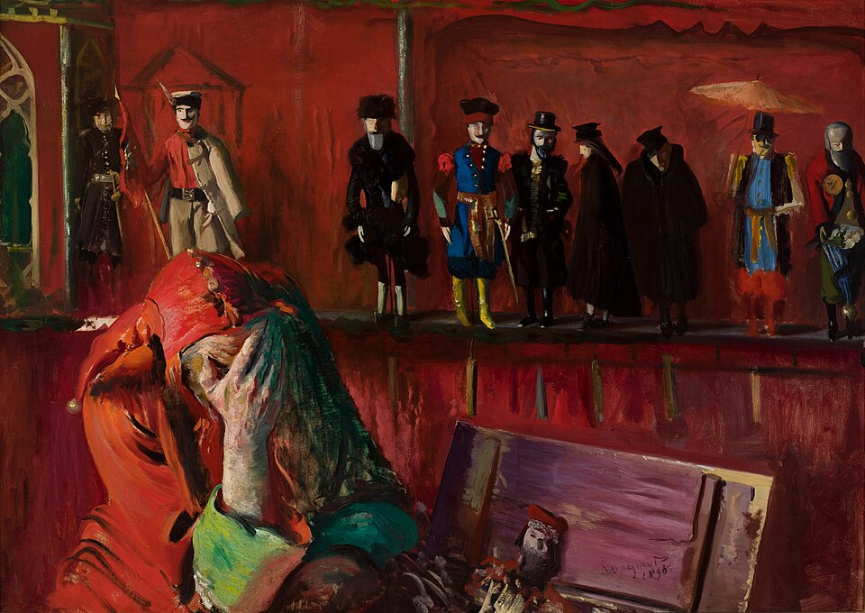
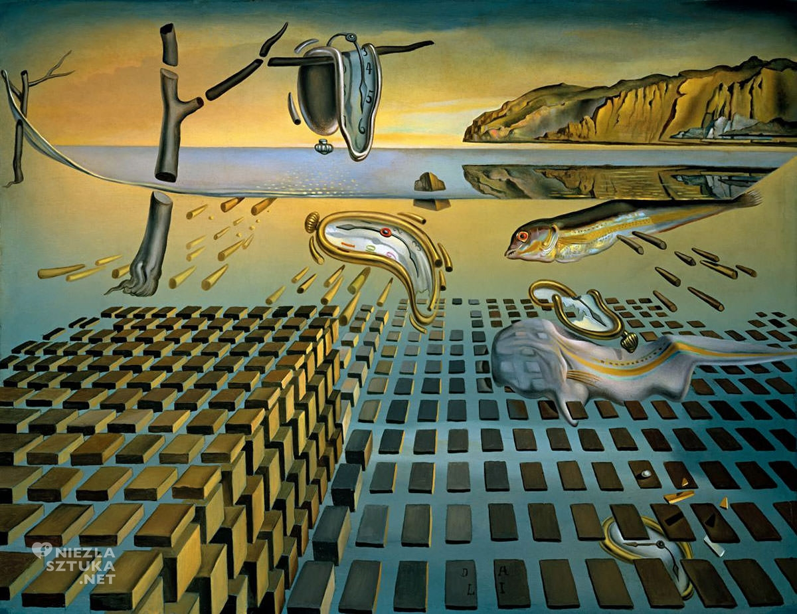
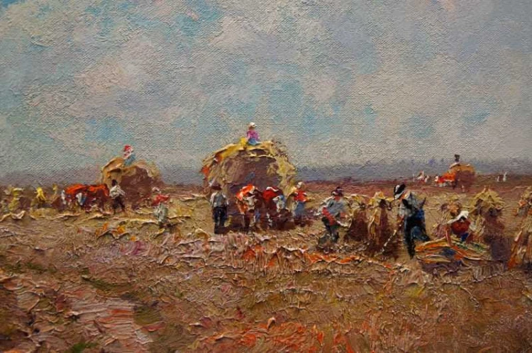

Wiem, że wielu z Was czekało na stronę, nie wszyscy chcą korzystać z FB i podobnych wynalazków, co bardzo popieram. Strona stała się na wiele miesięcy moim jedynym medium, gdy w 2020 roku publikowałem oficjalne dane mówiące o tym, że tamten sezon grypowy nie różnił się specjalnie od lat poprzednich poza tym, że w sezonie 2019 -2020 w Polsce i w wielu krajach europejskich było znacznie mniej zgonów niż zwykle z powodu wyjątkowo lekkiej zimy.
Możecie przeczytać o tym w raporcie "Prawdziwa tragedia narodu polskiego 2020/2021: Walka z covid-19"
Moje dane pochodziły od Ministra Zdrowia oraz z Urzędu Stanu Cywilnego były i są nadal niepodważane przez nikogo. 35 lat z powodzeniem zajmuję się zawodowo badaniami społecznymi i demografią i wiem, o czym mówię.

Wywołało to szał mainstreamu i blokadę nie tylko moich profili na social mediach, ale i prywatnego newslettera na polskim, prywatnym hostingu w mojej domenie. W 2026 mam déjà vu. Po kilku latach płacenia ze serwer, ta sama firma hostująca nie potrafi mi przywrócić mojej zdemolowanej strony przez podobno automatyczną aktualizację Word Pressa, programu do publikacji stron www. Do tego zdarzenia nie powinno nigdy dojść, bo miałem wszelkie zabezpieczenia przed jakimikolwiek automatycznymi zmianami, a jednak. Ktoś uznał, że w imię obsesyjnego "bezpieczeństwa" można wszystkim użytkownikom tego programu zniszczyć ich prywatne dorobek.

To był wyraźny znak, że trzeba pozbyć się wszelkich zależności od wielkich firm hi-tech, jeśli chcemy unikać niespodzianek. Wiele lat temu odrzuciłem wszystkie nowe wersje Windowsów, aby panować nad tym, co się dzieje na moim komputerze. To jest mój chleb, nikt nie ma prawa zmieniać na moim biurku moich narzędzi. Jeśli kupuję grabie i chowam je swojej szopce, to one mają tam stać. Nie chcę każdego ranka szukać grabi po całym obejściu, bo ich producent stworzył grabie inteligentne i zoptymalizował je do poprawnego przechowywania. Teraz grabie co noc same przechodzą do innego, cieplejszego pomieszczenia... Kto chce takie grabie?

Brzmi to absurdalnie, ale od dwóch dekad tak waśnie żyjemy, systemy operacyjne na komputery i telefony nieustannie same się zmieniają i trenują swych użytkowników jak młodych żołnierzy kapral na poligonie: "młody, orientuj się!" i pyk pod nogi granat hukowy.
Co zatem robić, bo widać wyraźnie, że pętla się zaciska. Można oczywiście brać, co dają i czekać aż wszystko na ekranie się zrobi białe lub czarne. Są jednak inne możliwości.
W przypadku utrzymania stron www i innych usług typy e-commerce koniecznie wychodzimy z UE. Jest sporo cywilizowanych państw, w tym w strukturze Wspólnot Europejskich, które mają w nosie unijne idiotyczne normy UE i zakazy, a co ciekawe kładą nacisk na prywatność i wolność słowa! UE to skansen, świat się rozwija, gdy UE pędzi ku przepaści.
Poza bezpieczeństwem naszych zasobów i swobodą wypowiedzi jest druga kwestia, sprawa dość ważna. Polskie firmy np. hostingowe, ale i inne technologiczne np.: telefoniczne, internetowe, itp. to jest szczyt arogancji. Gdy coś trzeba zmienić, naprawić to Waszym jednym zgłoszeniem zajmuje się klika osób i oni wszyscy robią głupstwa nie wiedząc o tym, co robią pozostali. Wy jesteście wtedy komandosem logistyki i musicie rozwiązać węzeł gordyjski, który Wasz "usługodawca" stworzył po Waszym zgłoszeniu. Po takiej akcji już macie dość zgłaszania czegokolwiek, czyli cel został osiągnięty: klient już nic nie zgłosi!
Można by tak długo, ale powiem krótko, tym firmom jak kolega, też socjolog: Wszyscy won! Na całym świecie czeka na Was tysiące firm, gdzie na Waszego e-maila, dostaniecie e-maila pisanego przez człowieka, często z uroczymi błędami, nie musicie prowadzić korespondencji w "panelu klienta, który zniknie wraz z Waszą ostatnią płatnością i zostaniecie bez dostępu do dokumentacji, itd. itp.
Można by pisać długo o absurdach w jakich nam przyszło żyć, ale zmierzajmy ku normalności.
Mam jeszcze do wrzucenia na tę stronę blisko 1000 merytorycznych raportów, a czasem lżejszych felietonów pisanych przez ostatnie kilka lat. Dzięki Waszej pomocy ten blog i moja praca analityczna i demaskatorska może się rozwijać za co wam dziękuję i proszę o jeszcze. Samo utrzymanie strony nie jest zbyt drogie. Moim kosztem jest czas, który poświęcając na analizy i pisanie zabieram z innych moich aktywności, głównie zawodowych.
Przed laty zamknięto mi prywatny newsletter, myślę że warto do niego wrócić. Może wzbogacony o prognozy meteo albo jeszcze coś innego, np. "Kitomierz"? Tak roboczo nazwałem własny system do mierzenia ile "kitu" jest w poszczególnych newsach mainstreamu i jakie serwisy danego dnia lub na zawsze omijać. Proszę piszcie sami, na razie na FB co by Was interesowało. Potem oczywiście tu Bedzie forum do dyskusji.
Paweł Klimczewski
Dziękuję wszystkim za dotychczasowe wsparcie. Dzięki niemu wiem, że moja działalność ma sens i ją oraz stronę bloga podtrzymuję. Mam nadzieję, że migracja mojego serwera z PRLbis do wolnego świata będzie początkiem podobnych akcji po Waszej stronie, a mi pozwoli już bez obaw na rozwój serwisu.
Jeśli uważacie, że możecie mnie wesprzeć nie ma kwot za małych. Nawet najmniejsze kwoty dają realne wsparcie.
mBank : 87 1140 2017 0000 4002 1094 2334
Paweł Klimczewski, tytułem: wpłata
Dziękuję ze wsparcie niezależności mediów w Polsce.